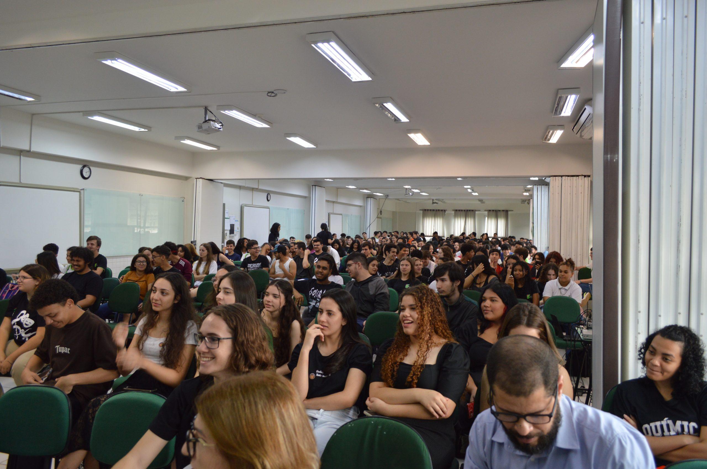

Atividades previstas
Portal oficial da Semana de Tecnologia da Informacao
Informacoes da SETIF IFPR reunidas em um unico ambiente.
Acompanhe a programacao da edicao, consulte os minicursos e palestras previstos, veja a mostra de projetos e acesse as orientacoes de inscricao e submissao divulgadas pela comissao organizadora do evento.
- Programacao separada por palestras e minicursos
- Mostra de projetos e informacoes de submissao
- Local do evento e cronograma da proxima edicao

IFPR Paranavaí
Próxima edição em outubro
Informacoes do evento
Resumo da programacao prevista para a proxima edicao.
Palestras previstas
Minicursos previstos
Dias de programacao
Eixos da SETIF
Temas recorrentes da programacao e da mostra academica.
Desenvolvimento
Software, interfaces e boas praticas
Atividades voltadas para desenvolvimento web, organizacao de projetos, interfaces e solucoes para problemas reais.
Pesquisa aplicada
Dados, automacao e tecnologia aplicada
Palestras e minicursos com foco em integracao entre programacao, analise de dados, automacao e uso de laboratorio.
Mostra academica
Projetos estudantis e integracao institucional
Espaco para apresentacao de trabalhos, compartilhamento de experiencias e integracao entre ensino, pesquisa e extensao.
Programacao prevista
Consulte as atividades separadas por modalidade.
Proxima edicao
Contagem regressiva para a abertura do evento.
00
Dias
00
Horas
00
Minutos
00
Segundos
Local do evento
IFPR Campus Paranavaí
A programação acontece no campus do IFPR em Paranavaí, com espaços preparados para palestras, demonstrações, oficinas e apresentação de projetos estudantis.
Consultar programação